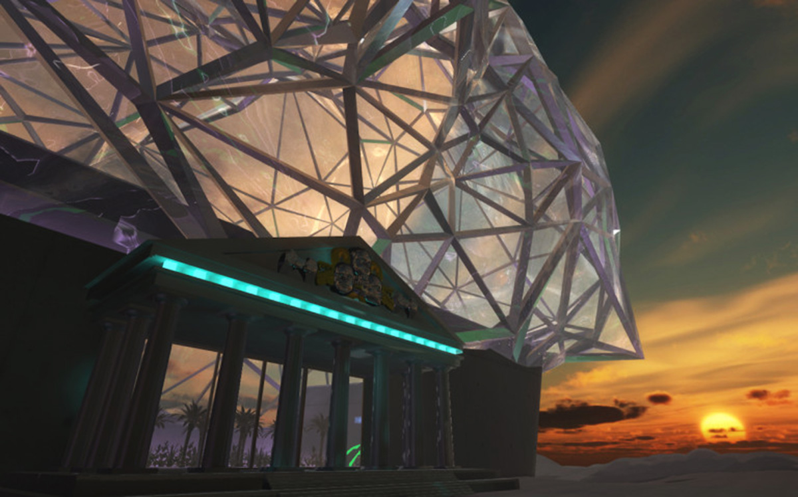
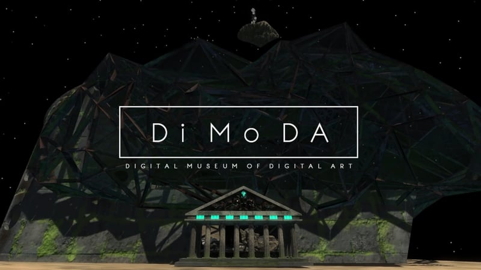

DiMoDA es una institución virtual pionera, dedicada a exhibir obras de arte de realidad virtual de vanguardia.
Se creó el año 2013 por Alfredo Salazar-Caro y William Robertson. Este museo ha lanzado tres exhibiciones que presentan 15 experiencias de realidad virtual únicas y diseñadas por artistas.
Buscar exponer toda la gama de arte digital contemporáneo, con un enfoque especial en las obras de artistas vivos. Se dedica a recopilar, guardar y exhibir diferentes obras.
En 2015, DiMoDA 1.0 se lanzó con Transfer Gallery en Nueva York y desde entonces ha viajado por todo el mundo. Se han descargado miles de exposiciones virtuales en todo el mundo y se han realizado exposiciones en ciudades como Nueva York, Miami, Chicago, Berlín, Dusseldorf, Dubái y Bangkok, entre otras. Este museo no cuenta con un lugar físico específico, viaja a través del mundo según sus exposiciones y artistas, a diferencia de otros museos virtuales.


VOMA
El VOMA es el primer museo digital totalmente interactivo, que nació a partir de la nueva realidad tecnológica, globalizada y a distancia (pandemia). Es una institución que ofrece la oportunidad de presenciar distintas exhibiciones, sin importar nuestro paradero geográfico.
Es un edificio digital que cambia su forma según lugar y exhibición, que busca adaptarse para exponer diferentes historias y perspectivas. A pesar de ser una realidad virtual, se caracteriza por tener varios aspectos realistas, tales como la luz, la hora del día o la estación.
El VOMA busca convertirse en un espacio versátil, flexible y nómada que facilite el desarrollo de propuestas que no se pueden albergar en un museo físico. Es decir, este museo se presta como escenario para modos experimentales de creatividad, de difusión y de accesibilidad. Apuesta por un mundo artístico y democratizado, creando una realidad virtual que para muchos sería imposible conocer si fuera de otra manera.
El VOMA cuenta con proyectos innovadores articulados en torno a asuntos como la preservación del patrimonio cultural y natural.